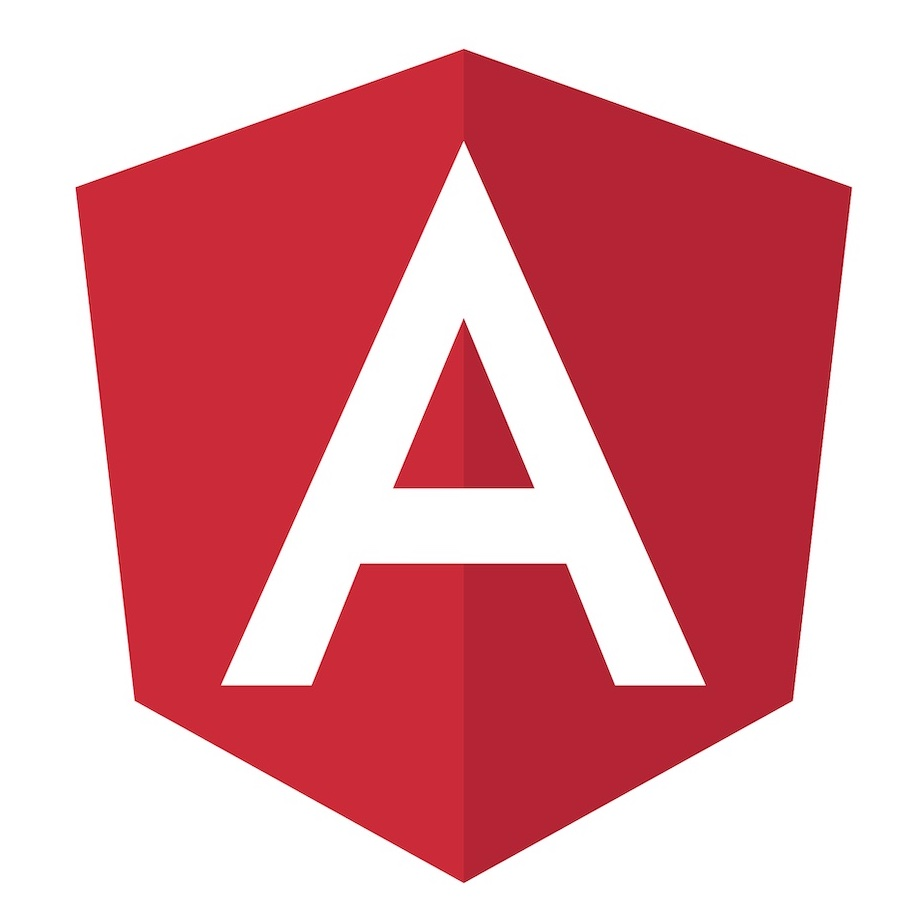

Angular
The only of the many Front-end Frameworks in 2023 based on TypeScript, Angular makes its spot on this list. Angular was initially released in the year 2010 by Google as AngularJs. The now known version of the Framework (Angular 2+) was developed and deployed in 2016, keeping in mind the need for improved technology to overcome the hurdles faced by the conventional Frameworks. Similar to ReactJs, it is an open-source platform used to develop user interfaces on the front end. Also read:- React vs Angular: Which Is A Better JavaScript Framework? The one main difference between React and Angular is that Angular has a two-way binding feature. The presence of this feature allows the integration of any changes made in the model with the view. This way, a developer would see what changes they are making in the application and how it looks in real-time. Angular usually deals with the development of mobile and web applications. Not just that, but one can easily build both single and multi-page web applications. Due to its various features, Angular is opted by some of the biggest companies in the world, including Microsoft Office, BMW, Forbes, Gmail, and Upwork. Although Angular has better features when compared to React, it is not easy to learn. The framework is a bit complex and thus takes time to excel at. Read more:- Features & Differences Of Angular 9 and Angular 8